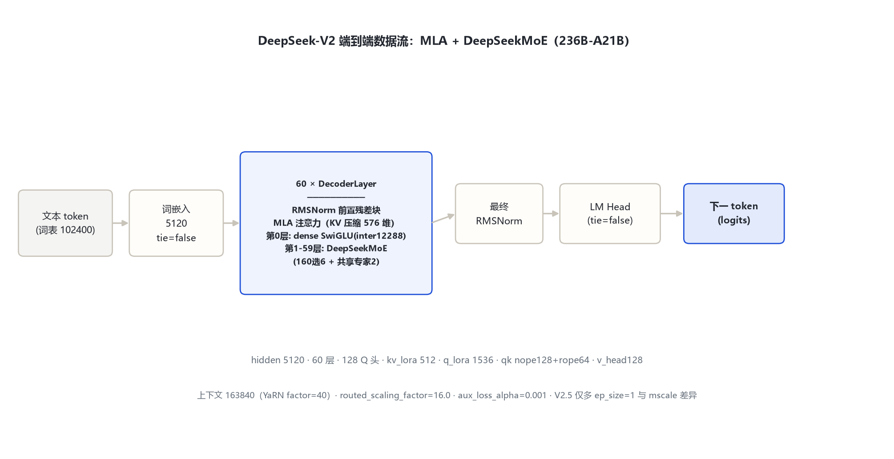
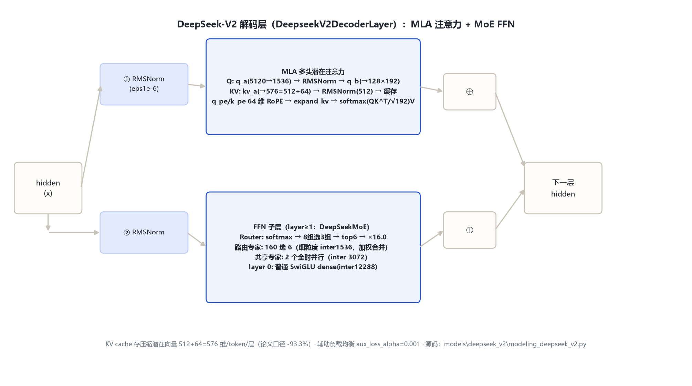

本页以 远端官方 config.json（2026-10-31 经 hf-mirror 拉取留档：DeepSeek-V2 / V2-Chat / V2.5）、transformers 本地源码（E:\transformers\src\transformers\models\deepseek_v2\）与官方论文（arXiv:2405.04434）为依据。DeepSeek-V2.5 经核验与 V2 同架构（仅多 ep_size=1、YaRN mscale 0.707→1.0），并入本目录作变体节。
| 字段 | 取值（V2 / V2-Chat / V2.5 相同） | 来源 |
|---|---|---|
| architectures / model_type | DeepseekV2ForCausalLM / deepseek_v2 | 远端官方 config |
| hidden_size / num_hidden_layers | 5120 / 60 | 远端官方 config |
| Q 头 / KV 头（MLA 语义） | 128 / 128（MLA 潜在压缩，非标准 GQA） | 远端官方 config |
| intermediate_size（dense，仅第 0 层） | 12288 | 远端官方 config |
| kv_lora_rank / q_lora_rank | 512 / 1536（MLA 低秩压缩维） | 远端官方 config |
| qk_nope / qk_rope / v_head_dim | 128 / 64 / 128（qk_head_dim=192） | 远端官方 config + 复算 |
| n_routed_experts / n_shared_experts / num_experts_per_tok | 160 / 2 / 6 | 远端官方 config |
| moe_intermediate_size / first_k_dense_replace / moe_layer_freq | 1536 / 1 / 1 | 远端官方 config |
| topk_method / n_group / topk_group / routed_scaling_factor | group_limited_greedy / 8 / 3 / 16.0 | 远端官方 config |
| norm_topk_prob / aux_loss_alpha / seq_aux | false / 0.001 / true | 远端官方 config |
| vocab / max_position / rope_theta | 102400 / 163840 / 10000 | 远端官方 config |
| rope_scaling | YaRN：factor=40 · original_max=4096 · beta_fast=32 · beta_slow=1 | 远端官方 config |
| tie_word_embeddings / attention_bias | false / false | 远端官方 config |
图：按 config 字段逐层复算的参数构成（B）。Total ≈ 236B、每 token 激活 ≈ 21B，与官方论文口径对账一致。共享专家与注意力在两条序列中数值相同（全时激活，无路由差异）。
| 变体 | 架构差异（与 V2 base 比） | 说明 |
|---|---|---|
| DeepSeek-V2（base） | —（基准） | 远端官方 config 逐字段核对 |
| DeepSeek-V2-Chat | config 字段与 base 完全一致 | SFT+RL 对齐版；generation temp 0.3 / top_p 0.95 |
| DeepSeek-V2.5 | 仅多 ep_size=1；YaRN mscale/mscale_all_dim 由 0.707→1.0 | 官方口径：合并 V2-Chat 与 Coder-V2-Instruct；其余架构字段与 V2 逐字段一致，并入本目录不单独立目录 |
文本 token（词表 102400）→ 词嵌入（5120，tie=false）→ 60 × DecoderLayer：第 0 层 dense（RMSNorm→MLA→⊕→RMSNorm→SwiGLU→⊕），第 1–59 层 FFN 子层换 DeepSeekMoE（Router→160 选 6 路由专家 + 2 共享专家并行）→ 最终 RMSNorm → LM Head。MLA 在 KV 侧只缓存 576 维潜在向量。

图 1：MLA + 1 dense / 59 MoE 层的端到端主干。
单 RMSNorm 前置残差块（modeling_deepseek_v2.py:421-461）；FFN 子层按层索引二选一（源码 427 行：layer_idx≥1 走 MoE，第 0 层 dense）。

图 2：MLA 注意力子层 + DeepSeekMoE FFN 子层。
KV cache 形态（源码 394-395）：每层只存 512+64=576 维/token；论文口径 KV cache 较标准注意力压缩 93.3%。
| 形态 | 每 token 每层 KV 缓存维数 | 来源 |
|---|---|---|
| 标准 MHA（128 头 × (k+v)128） | 128×128×2 = 32768 | 对照推算 |
| 67B GQA（8 KV 头 × 128×2） | 8×128×2 = 2048 | 对照推算 |
| DeepSeek-V2 MLA | 512（kv_lora）+ 64（rope）= 576 | 远端官方 config + 源码 388-395 |
缩放 = (qk_head_dim)^-0.5 = 192^-0.5，并乘 YaRN mscale（V2/V2-Chat=0.707；V2.5=1.0）。RoPE 只施加在 q_pe/k_pe 的 64 维分量（partial rotary）。
| token | ID / 含义 | 来源 |
|---|---|---|
| bos_token_id | 100000（add_bos_token=true） | 远端官方 config |
| eos_token_id | 100001（generation_config 同） | 远端官方 config |
| vocab_size | 102400（与一代同一词表） | 远端官方 config |
| Chat 模板 | User: … / Assistant: … 格式 | 远端官方 tokenizer_config |
| 维度 | 一代 67B（基线） | DeepSeek-V2（236B-A21B） |
|---|---|---|
| 形态 | Dense（95 层） | MoE：1 dense + 59 MoE 层，160 专家选 6 + 2 共享 |
| 注意力 | GQA（64Q/8KV） | MLA（KV 潜在压缩 576 维，缓存 -93.3%） |
| Q 路径 | 直接投影 | Q 低秩分解（q_lora=1536）+ 逐分量 RMSNorm |
| 路由 | 无（dense） | group_limited_greedy：8 组选 3 再选 6；×16.0 |
| 上下文 | 4096（RoPE θ=1e4） | 163840（YaRN factor=40，原始 4096） |
| 总参/激活 | 67B dense | 236B total / 21B activated（论文） |
| 负载均衡 | 无 | 辅助损失 aux_loss_alpha=0.001（V3 才改无辅助损失） |
相邻代引用：V3（671B-A37B）沿用 MLA + DeepSeekMoE 并改为无辅助损失负载均衡、引入 MTP——数字引自 V3 官方来源（arXiv:2412.19437），不在本目录展开。